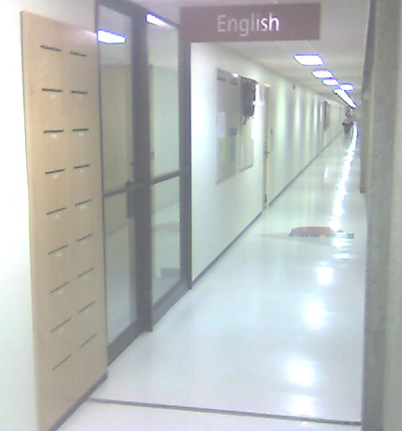

English 1900e: Introduction to Language and Literature (Fall 2008)
Posted: Jul 03, 2008 13:07;
Last Modified: Dec 26, 2008 19:12
Keywords:
Contents
- Times and location
- Office and Office Hours
- About this course
- Learning goals
- Texts
- Evaluation
- Policies
- Schedule
Times and location
Mon/Wed/Fri, 12:00-12:50, W763.
Office and Office Hours
My office is room B810B. My telephone numbers, a map, and other contact information is available on my Contact page.
I hold regular office hours at the following times:
- Mondays, 2-3 pm;
- Tuesdays, By appointment;
- Wednesdays, 3-4 pm;
- Thursdays, 10am-11 am.
- Fridays, 10am-11am; 2pm-3pm.
I am also available by appointment. You can out more about my schedule this semester by visiting my Office Hours web page.
Our subject librarian, Glenna Westwood, will also be holding office hours in the Department. She will be available in B810H from 11:30-12:30 on
- Tuesday, September 16 and 30
- Tuesday, October 14 and 28
- Tuesday, November 11 and 25
She is also available in the Library on a drop in basis or by appointment for advice on research in English studies.
About this course
English 1900 is the required introductory course in the department. The calendar description is as follows:
An introduction to the study of English language and literature, involving an exploration of various genres of literature and non-literary texts and requiring a series of critical assignments designed to encourage analytical reading, thinking and writing.
Within this broad rubric instructors are free to set their own themes and texts. In this section, our theme will be “Literary Study as Conversation.”
High school language arts curricula concentrate on developing students’ ability to read and enjoy literature: students are taught to recognise genres, understand common types of literary language, and do basic fact-oriented research. University literary programmes, on the other hand, assume that students have already developed these basic skills and concentrate instead on developing students’ ability to contribute to literary debate: to develop original theses and hypotheses, identify and marshal original evidence, accommodate or refute opposing arguments, and present their work in a variety of formats, including essays, lectures, and class discussion.
This section of English 1900 will concentrate on developing these skills. Students will be given a variety of exercises intended to help them reflect on and improve their skills in generating interesting and original literary arguments, observations, and research topics for class discussion, group work, and formal essays and presentations. Students will also work on their skills in evaluating their own arguments and those of others including their classmates and professional literary and historical scholars.
Learning goals
By the end of the course students should have an understanding of the conventions, processes, and skills required for University-level literary research. This involves the ability to
- recognise and develop appropriate and original literary topics and arguments
- identify and marshal appropriate supporting evidence from primary and secondary sources
- accommodate, modify, or refute arguments and evidence of others in students’ own work
- present research and arguments in a variety of standard formats including essays, lectures, and class discussion
- help themselves and others improve their work through the revision process.
Texts
Note: all texts are required.
- Course packet, containing
- Licence for access to Chaucer, Geoffrey. 1997. The Book of the Duchess. Ed. Murray McGillivray.
- O’Connor, Flannery. 1988. “A Good Man is Hard to Find.” 117-133. The Complete Stories. New York: Farrar, Straus, Giroux.
- Sawai, Gloria. 2001. “The Day I Sat with Jesus on the Sundeck and a Wind Came Up and Blew My Kimono Open and He Saw My Breasts.” 277-296. A Song for Nettie Johnson. Regina: Coteau.
- Austen, Jane. 2008. Pride and Prejudice. Oxford World’s Classics. Oxford: Oxford UP. ISBN – 13:9780199535569 (Required).
- Fielding, Helen. 1996. Bridget Jones’s Diary. New York: MacMillan. ISBN-13: 9780330332774 (Required).
- O’Donnell, Daniel. 2008. English 1900e (2008): Class Notes
- O’Neill, Eugene. 2002. Long Day’s Journey into Night. Second Edition. New Haven: Yale UP. ISBN-13: 9780300093056 (Required).
- Wordsworth, William and Samuel Coleridge. Lyrical Ballads. Routledge. ISBN-13: 9780415355292. Note: This book contains the complete text of the various editions of Wordsworth and Coleridge’s Lyrical Ballads. For this course, we will concentrate on the first edition from 1798 (pages 48-161 in your text). You should consider the “Advertisement” to the 1798 edition (pp. 49-50) to be part of the text as it has an important place in the history of the Romantic movement.
Evaluation
The evaluation scheme presented here should be considered tentative and open to change until the beginning of the last class before the Add/Drop deadline (i.e. Monday, September 8).
| Assignment | Value |
| 1. Essay 1 Due September 22 |
10% |
| 2. Essay 2 / Creative Project Due October 27 |
15% |
| 3. Essay 3 Due December 3 |
20% |
| 4. Group work Throughout semester |
15% |
| 5. Quizzes Throughout semester |
5% |
| 6. Final Exam (WebCT) December 8-16 |
20% |
| Best mark out of 1-6 (above) | 15% |
Note: As mentioned in class on September 29th, I have decided to drop the original presentation mark in order to give more time to work on idea formation in your essays and introduce some extra classes on essay writing. As a result we have modified the evaluation scheme: rather than receiving 15% for an in-class oral presentation, the 15% will now be used to increase the weighting of your best score form the six remaining assessment categories. If your best grade in the semester comes from Essay 1, for example, I will weight that grade as 25% of your final mark (10%+15%). If your quiz average is your best grade, I will weight that part of your assessment at 20% (5% + 15%).
Policies
The following policies will be followed in all my classes unless otherwise announced. You are expected to be familiar with the policies reproduced here and in the more general section on my website. These additional web pages are to be considered part of this syllabus for the purposes of this course. Failure to conform to any of these policies may result in your grade being lowered.
Grade scale
The University of Lethbridge keeps track of student performance using a letter and grade point system (See section 4 of the University Calendar). Instructors assign students a letter grade at the end of each course (the University does not issue or record mid-term grades). These letter grades are converted to a numerical value (a Grade Point) for assessing overall academic performance (a Grade Point Average or GPA). The University does not record percentage-type grades and does not have a fixed scale for conversion from percentage scores to letter grades and grade points. Each instructor is responsible for determining their own methodology for determining students’ final letter grade.
In my classes, I use the following letter-grade to percentage correspondences:
| Excellent | Good | Satisfactory | Poor | Minimal pass | Failing | |||||||
| Letter | A+ | A | A- | B+ | B | B- | C+ | C | C- | D+ | D | F |
| Percent range | 100-94 | 93-90 | 89-86 | 85-82 | 81-78 | 77-74 | 73-70 | 69-66 | 65-62 | 61-58 | 57-50 | 49-0 |
| Conventional value | 100 | 92 | 88 | 84 | 80 | 76 | 72 | 68 | 64 | 60 | 56 | 49-0 |
| Grade point | 4.0 | 3.7 | 3.3 | 3.0 | 2.7 | 2.3 | 2.0 | 1.7 | 1.3 | 1.0 | 0 | |
How your grade is determined depends on the type of work being assessed. Tests of specific skills or knowledge (such as identification questions in literature classes, or fact-oriented tests in my grammar and language classes) are usually assigned a numeric score which is easily converted to a percentage. Essays, presentations, and other performance-oriented tests are usually graded by letter. I convert letter grades to percentages by taking the median value in each grade-range, and rounding up to the nearest whole percent. The only exceptions are A+ (which is converted to 100%), and F (which is converted to an arbitrary percentage between 0% and 49% based on my estimation of the work’s quality). These scores can be found in the conventional value row of the above table.
In marking work I try to keep the University’s official description of these grades in mind (a description can be found in the University Calendar, Part IV.3.a). If you get an A it means your work is excellent; a B means your work is good; a C means it is satisfactory; a D that it is barely acceptable (minimal pass); and an F that it is failing to meet University-level standards.
I have prepared rubrics for most types of qualitative assignments (assignments that do not expect the student simply to provide a correct factual answer). These can be found in my Academic Policies section: http://people.uleth.ca/~daniel.odonnell/Academic-Policies/
Submitting Work
Tests, Exams, and Quizzes
Tests and Exams will be written in the University’s testing labs on Blackboard (formerly WebCT). Quizzes may be presented on Blackboard, but will more commonly be given out and collected in class
Essays and Reports
 Essays and reports will normally be collected using Turnitin. Information on our account (URL, ID number, and Password) is available from our class space on Blackboard: http://courseware.uleth.ca/
If paper copies are required, you should leave them in my slot in the Department Drop Box (pictured at right).
Plagiarism
This course uses plagiarism detection software. Any plagiarism will be treated very seriously: you can expect to receive a grade of 0 on the assignment as well as other penalties depending on the seriousness of the offence.
Class schedule
The following schedule is intended to help you plan your work for this course. The schedule is tentative and subject to change.
| Week | Date | Topic | Homework Due/Readings |
| 1 | Mon. 1/9 | Labour Day (no class) | |
| Wed. 3/9 | Welcome | Please bring print out or electronic copy of this syllabus (if possible) | |
| Fri. 5/9 | In-class Brainstorming I |
|
|
| 2 | Mon. 8/9 | In-class Brainstorming II |
|
| Tue. 9/9 | Last day for course add/drop and registration | ||
| Wed. 10/9 | Tutorial Group Brainstorming |
|
|
| Thurs. 11/9 | Tutorial Report on Questions provided at the end of Wednesday’s class. Due 23:59, at http://www.turnitin.com/ | ||
| Fri. 12/9 | Tutorial Group Report and Discussion |
|
|
| 3 | Mon. 15/9 | Tutorial Group Workshop: Essay Ideas | Bring two copies of your interesting passages/ideas sheet |
| Wed. 17/9 | Lecture and Discussion: Essay Format and Expectations | Grading Rubric for Essays Style Sheet Pre-submission Checklist |
|
| Fri. 19/9 | Tutorial Group: Essay Workshop | Bring two copies of a completed draft of your essay | |
| 4 | Mon. 22/9 | Essay 1 Due. Please submit the final draft of your essay electronically via Turnitin. Please also submit paper copies of your Interesting Ideas Sheet and the draft essay with your partner’s corrections via the Drop Box in the English department. |
|
| Lecture and Discussion: Oral Presentations: Tips and Strategies | |||
| Wed. 24/9 | Poetry: Introduction |
|
|
| Fri. 26/9 | Poetry and Pleasure |
|
|
| 5 | Mon. 29/9 | Poetry and Pleasure |
|
| Wed. 1/10 |
|
||
| Fri. 3/10 |
|
||
| 6 | Mon. 6/10 | “...language of conversation in the middle …classes” |
|
| Wed. 8/10 |
|
||
| Fri. 10/10 | “...language of conversation in the… lower classes” |
|
|
| 7 | Mon. 13/10 | Statutory Holiday (no class) | |
| Wed. 15/10 | Reading Drama | ||
| Fri. 17/10 | No class due to instructor absence (CaSTA 2008) |
||
| 8 | Mon. 20/10 |
|
|
| Wed. 22/10 | |||
| Fri. 24/10 | Reading Novels | ||
| 9 | Mon. 27/10 | Essay 2 / Creative Project Due Please submit the final draft of your essay electronically via Turnitin. |
|
|
|||
| Wed. 29/10 | |||
| Fri. 31/10 | |||
| 10 | Mon. 3/11 |
|
|
| Wed. 5/11 | No class due to instructor absence (TEI Members Meeting) |
||
| Thu. 6/11 | Last day for withdrawal | ||
| Fri. 7/11 | No class due to instructor absence (TEI Members Meeting) |
||
| 11 | Mon. 8/11 | ||
| Wed. 12/11 | |||
| Fri. 14/11 | Novels conclusion | ||
| 12 | Mon. 17/11 | Middle English | |
| Wed. 19/11 | Reading Middle English | ||
| Fri. 21/11 | Chaucer | ||
| 13 | Mon. 24/11 | Group Brainstorming | |
| Wed. 26/11 | Group Brainstorming | ||
| Fri. 28/11 | Tutorial Groups | Secondary Criticism | |
| 14 | Mon. 1/12 | Tutorial Reports | |
| Wed. 3/12 | Essay 3 Due | ||
| Conclusion | |||
| Exam Period | 8/12-16/12 | Final Exam | |